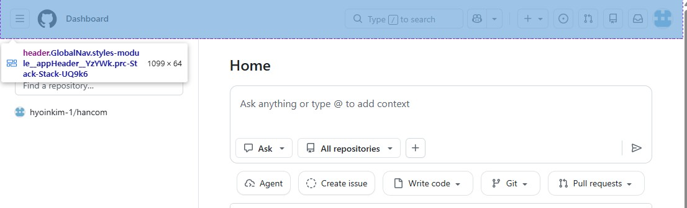
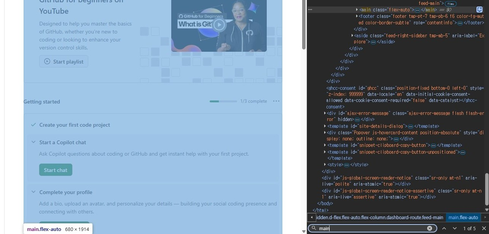
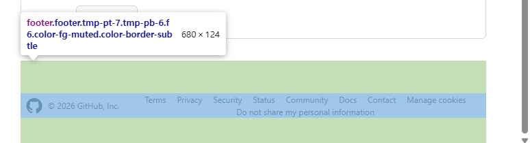
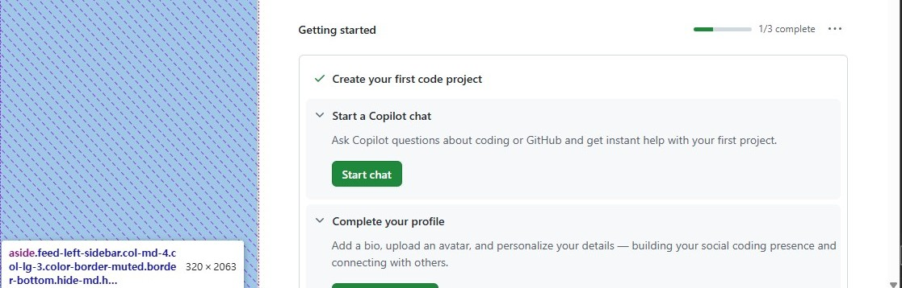
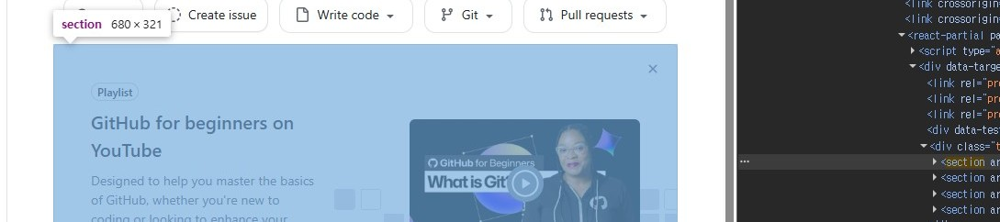

header분석한 웹사이트 : github

main
footer
aside
section
수업 때 배운 시맨틱 태그들이 어떻게 활용되고 있는지 개발자들이 자주 사용하는 github에서 개발자 도구를 통해 확인했습니다. html 소스코드 상에서 header, main, footer, aside 등의 태그들을 확인할 수 있었습니다. 이미지로 첨부하지 않았지만, header의 navbar와 footer의 navbar 에 각각 nav태그를 사용한 것으로 보아 여러 개의 링크들을 담고 있는 구조들을 nav로 묶어 관리하는 것 같습니다.